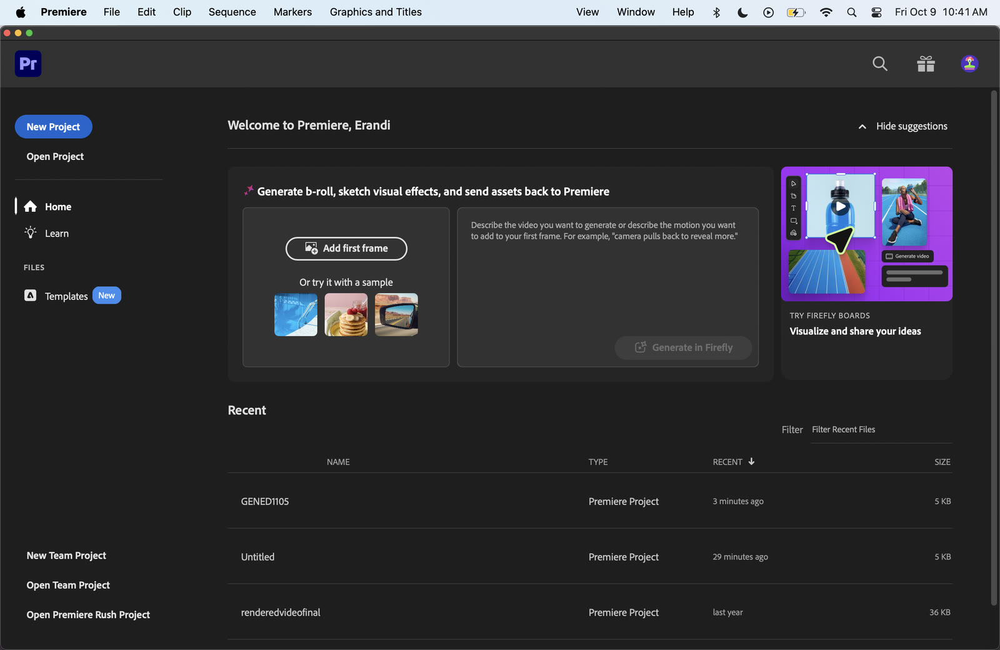
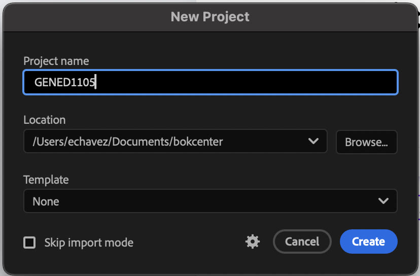
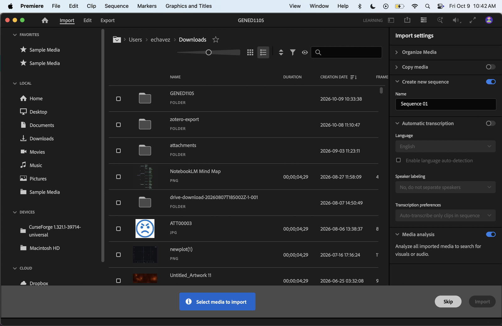
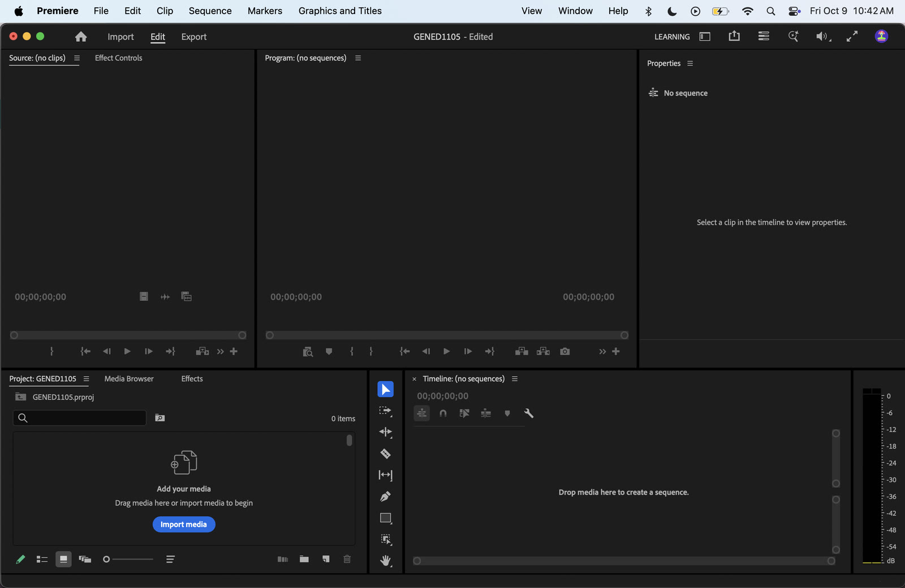

A step-by-step guide for turning your museum footage into a short, finished sequence in three rounds: assemble and trim, shape the story, then clean up sound and add text.
Shortcuts are shown Mac first, then Windows: ⌘ = Ctrl, ⌥ = Alt.
Each step has a short silent screen recording. Press play to watch, use the full-screen button to read small menu text, and click any screenshot to enlarge it.
Before you start
Set up the project
File › New › Project, or click New Project on the Premiere home screen. Name it and choose where to save it.

ScreenshotThe home screen. Click New Project.

ScreenshotName the project and pick a save location.
Import your clips: File › Import (⌘I / Ctrl+I), or drag the files into the Project panel.

ScreenshotThe Import screen.Video · 0:10Bringing footage into the Project panel.
Drag your first clip onto the empty Timeline. Premiere creates a sequence that matches your footage's size and frame rate.
Video · 0:15Dragging clips from the Project panel onto the timeline.
Save often: ⌘S / Ctrl+S.
The four panels you'll use mostProject holds your clips. Source Monitor (top left) previews a raw clip. Program Monitor (top middle) plays your edit. Timeline (bottom right) is where you arrange it. Effect Controls (top left, second tab) and Properties (top right) show settings for whatever clip is selected.

ScreenshotThe Edit workspace. Source and Program monitors on top, Project panel and Timeline below, Properties on the right.
Round 1
Assemble and trim
Pick 5–6 clips. Each should start and end exactly when the action matters, and none should run longer than a few seconds.
Fine-tune on the timeline
Scrub through your edit: drag the playhead across the timeline ruler, and the Program Monitor shows the frame under it. From the keyboard, play with Space, scrub with J (back) K (stop) L (forward), and step frame by frame with ←→.
Video · 0:42Scrubbing the timeline playhead to find the exact frame for a cut.
Drag an edge with the Selection tool (V) to shorten the start or end of a clip.
Ripple trim: park the playhead where you want the cut, then press Q to cut off everything before it or W for everything after. The gap closes automatically.
Split a clip:⌘K / Ctrl+K cuts at the playhead (or use the Razor tool, C).
Close a gap: click the empty space and press Delete, or right-click › Ripple Delete.
Video · 1:14Cutting a clip at the playhead and removing the unwanted piece.
Check length: hover over a clip to see its duration. Zoom the timeline with = and -.
Trim in the Source Monitor
Double-click a clip in the Project panel to open it in the Source Monitor.
Video · 0:13Opening clips from the Project panel in the Source Monitor to preview them.
Play the clip with Space to find the moment you want. You can scrub here with the same shortcuts as on the timeline (above).
Press I where the action begins and O where it ends.
Video · 0:52Marking In and Out points in the Source Monitor, then dragging only that range onto the timeline.
Drag the image from the Source Monitor onto the timeline. Only the part between In and Out comes along.
Put the clips in order
Drag clips to rearrange them. Hold ⌘ / Ctrl while dragging to insert a clip between two others without overwriting them.
Video · 0:08Inserting a clip between two others; the clips after it shift right.
Make the first shot set the scene and the last shot feel like an ending. Press Home and Space to watch the whole thing from the top.
Think about it: what makes a beginning or an ending?Openings often orient us: a wide or exterior shot, an entrance, a doorway, a sign. Endings often close something: a drawer shutting, someone walking away, a light going off, a held still shot, movement slowing down. Which of your clips does that work, and why?
Round 1 checklist
5–6 clips on the timeline
No clip longer than a few seconds
No gaps or black frames between clips
Opening shot establishes place; closing shot feels final
Round 2
Shape the story
Use speed and framing to steer attention: linger on a moment, move quickly through space, or point the viewer at a detail.
Change the speed of one clip
Right-click the clip › Speed/Duration (⌘R / Ctrl+R).
Set Speed: below 100% slows it down (50% = half speed), above 100% speeds it up (200% = double).
Video · 0:34Right-click › Speed/Duration to change a clip's speed.
Quick alternative: the Rate Stretch tool (R). Drag a clip's edge and the speed changes to fit the new length.
Video · 0:49Speeding up and slowing down with the Rate Stretch tool.
Zoom in on one detail
Select the clip and open Window › Effect Controls (the Properties panel shows the same Transform settings).
Under Motion, raise Scale (try 150–200%).
Adjust Position to frame the object, label, or texture you want noticed. You can also click the word Motion and drag the image directly in the Program Monitor.
Video · 0:34Raising Scale and adjusting Position to zoom in on a detail.
Optional slow push-in: move to the clip's start, click the stopwatch next to Scale, then move to the end and change the value. Premiere animates between the two.
Video · 0:54Setting Scale and Position keyframes to animate a push-in on the tortoise.
To crop instead: in the Effects panel, search “Crop,” drag it onto the clip, and adjust Left/Right/Top/Bottom in Effect Controls.
Watch the image qualityZooming enlarges pixels. If the detail looks soft or blocky, zoom less or pick a shot where you were physically closer to the object.
Round 2 checklist
One clip slowed down or sped up, with a reason you can explain
One shot cropped or zoomed to reveal a detail
Round 3
Sound and text
Remove distractions like museum chatter, then label the piece with a title or lower-third.
Rebalance or remove the original audio
Rebalance a clip's volume: make the audio track taller (double-click beside the track name) so you can see the thin white line running across the clip's waveform. Drag that line down to make the clip quieter or up to make it louder. A label shows the new level in dB as you drag. Use this to even out a loud clip against its neighbors or to pull chatter down under the image.
Video · 0:41Expanding the audio track and dragging the white volume line to rebalance a clip.
Rebalance only part of a clip:⌘ / Ctrl-click the same white line to add keyframes, then drag the line between two keyframes so the volume changes only where needed.
Video · 1:16Adding volume keyframes so the sound dips only in one stretch.
Remove it from one clip: right-click › Unlink, click only the audio part, and press Delete.
Video · 0:29Unlinking audio from video, then deleting just the audio.
Silence everything: click the M (mute) button at the left of track A1.
Video · 0:27Muting an entire audio track with the M button.
Add a title or lower-third
Simple title: choose the Type tool (T), click in the Program Monitor, and type. Premiere adds a text clip on a new video track above your footage.
Style the text in the Properties panel (or Window › Essential Graphics › Edit): font, size, color, and a background or shadow for readability.
Video · 0:41Typing a title with the Type tool and styling it in Properties.
Lower-third template: open the templates browser (Window › Essential Graphics › Browse; newer versions call it Graphics Templates), search “lower third,” drag one onto V2 above a clip, then edit its text.
Video · 1:01Adding a lower-third template and editing its text.
Drag the text clip's edges to set how long it stays on screen. Keep it on long enough to read twice.
PlacementTurn on safe margins (Program Monitor wrench icon › Safe Margins) and keep text inside the inner box. A lower-third usually names a place, object, or exhibit, like a wall label for the shot.
Round 3 checklist
Distracting audio rebalanced or removed
Title or lower-third added and readable
Finish
Export
Click the Export tab at the top of the window (or ⌘M / Ctrl+M).
Format: H.264. Preset: Match Source – Adaptive High Bitrate.
Name the file, choose a location, and click Export. Watch the .mp4 once before you submit it.